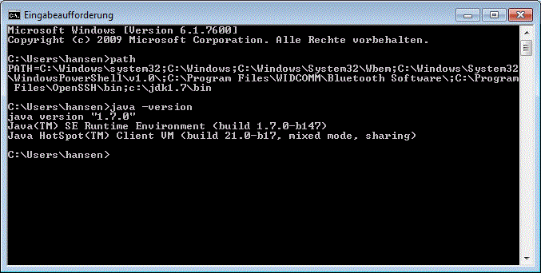
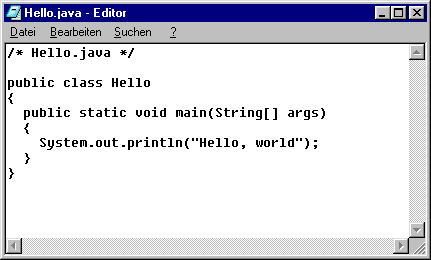
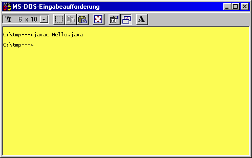
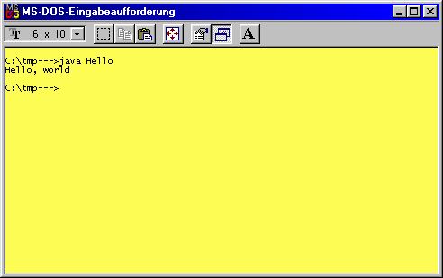

Falls Sie die ersten Gehversuche in Java machen wollen, ohne erst
viele Grundlagen lernen zu müssen, oder wenn Sie einfach nur
daran interessiert sind, möglichst schnell Ihr erstes Java-Programm
auszuführen, dann sollten Sie den folgenden Abschnitt lesen.
Sie erfahren hier in komprimierter Form, wie Sie ein einfaches Programm
erstellen und mit den Werkzeugen des JDK übersetzen und ausführen.
Zusätzlich gibt es einige Hinweise, um einfache Ein- und Ausgaben
durchzuführen.
Alle wichtigen Werkzeuge des JDK arbeiten kommandozeilenorientiert.
Sie haben also keine grafische Oberfläche, sondern werden in
einer DOS-Box aufgerufen und durch Aufrufparameter gesteuert. Eine
integrierte Entwicklungsumgebung mit integriertem Editor, Compiler
und Debugger bietet das JDK von sich aus nicht.
2.2.1 Quelltext erstellen, übersetzen und ausführen
1. Vorbereitung
Installieren Sie das JDK wie in Abschnitt 2.1
beschrieben und sorgen Sie dafür, dass in Ihrer Pfadangabe das
Verzeichnis \jdk1.7\bin enthalten ist.
Falls Sie das JDK nicht nach c:\jdk1.7
installiert haben, passen Sie die Pfadangaben entsprechend an. Ein
Aufruf von PATH zeigt an, ob
der Pfad korrekt gesetzt ist, durch Eingabe von java
-version können Sie die installierte JDK-Version
überprüfen:

Abbildung 2.1: Ist das JDK korrekt installiert?
2. Erstellen des Quelltextes
Erstellen Sie mit einem beliebigen Texteditor die folgende Datei Hello.java:
001 /* Hello.java */
002
003 public class Hello
004 {
005 public static void main(String[] args)
006 {
007 System.out.println("Hello, world");
008 }
009 }
|
Hello.java |
Listing 2.1: Hello, world
Die korrekt erstellte Datei enthält die Definition der Klasse
Hello mit der Methode main,
die das Hauptprogramm unserer Applikation enthält. Bitte geben
Sie die am Anfang jeder Zeile stehenden Zeilennummern nicht
mit ein. Sie dienen lediglich dazu, auf Teile des Listings verweisen
zu können, und werden beim Erstellen des Buchs automatisch generiert.
Der Java-Compiler kann damit nichts anfangen.
Sie können zum Editieren beispielsweise notepad oder edit
(unter Windows) oder vi oder Emacs (gibt es für
UNIX und Windows) verwenden. Ein guter Windows-Editor, der fast ebenso
viel kann wie seine professionellen (und sehr viel teureren) Brüder,
ist TextPad von Helios Software Solutions. Eine weitere
gute Alternative ist Notepad++.

Abbildung 2.2: Hello.java im Windows-Notepad
Übersetzen Sie die Datei mit dem Kommando javac
(so heißt der Java-Compiler des JDK). Wenn Sie keinen Fehler
gemacht haben, wird der Compiler-Aufruf kommentarlos akzeptiert und
Sie sehen wieder den DOS-Prompt:

Abbildung 2.3: Übersetzen von Hello.java
4. Ausführen des erzeugten Programms
Sie haben nun eine Datei Hello.class
erzeugt, die mit dem Java-Interpreter ausgeführt werden kann.
Das Programm wird aufgerufen und gibt die gewünschte Meldung
auf dem Bildschirm aus:

Abbildung 2.4: Ausführen von Hello
5. Beenden des Programms
Ein einfaches Java-Programm wird automatisch beendet, wenn seine main-Methode
beendet wurde (in welchen Fällen das nicht so ist, wird am Ende
von Abschnitt 23.2.1 beschrieben).
Unser Programm wird also nach der Ausgabe von »Hello, world«
beendet. Es gibt natürlich auch Fälle, bei denen ein gestartetes
Programm nicht ordnungsgemäß zum Ende kommt und auch auf
Benutzereingaben nicht mehr reagiert - meistens ist dafür eine
Endlosschleife verantwortlich. Glücklicherweise lässt sich
die virtuelle Maschine, in der das Java-Programm läuft, fast
immer durch Drücken von [STRG]+[C]
abbrechen. Diese »Notbremse« sollte allerdings nur im Notfall
gezogen werden, denn sie beendet das Programm augenblicklich und hinterlässt
dessen Daten möglicherweise in einem inkonsistenten Zustand.
2.2.2 Die Beispielprogramme
Auf die im vorigen Abschnitt beschriebene Weise können nun beliebige
Java-Programme angelegt, übersetzt und ausgeführt werden.
Die im Buch abgedruckten Beispielprogramme befinden sich auf der DVD
im Verzeichnis \examples. Kopieren Sie
diese einschließlich der darin enthaltenen Unterverzeichnisse
in ein beliebiges Verzeichnis auf Ihrer Festplatte. Benutzen Sie einen
beliebigen Editor zur Eingabe oder Veränderung von .java-Dateien,
übersetzen Sie die Datei mit dem Kommando javac
und starten Sie das fertige Programm mit dem Kommando java.
Falls Sie ein Applet geschrieben haben, erstellen Sie zusätzlich
eine passende HTML-Datei, und starten Sie das Programm mit dem Kommando
appletviewer
anstatt mit java.
Die Originalversionen der Beispielprogramme wurden bereits vorkompiliert
und können direkt mit dem Java-Interpreter ausgeführt werden.
Als Entwicklungssysteme für dieses Buch wurden die Versionen
1.1 bis 7.0 des JDK verwendet. Die meisten Beispiele wurden unter
Windows 95, 98 und XP entwickelt und getestet, einige auch unter Windows
NT, Vista, Windows 7, SUSE Linux, Ubuntu, Mac OS X oder Solaris. In
die Beispiellistings aus dem AWT sind einige Hinweise von Lesern mit
SUN-Solaris-Plattformen eingeflossen. Bei Verwendung anderer Plattformen
könnte es zu leichten Abweichungen bei der Installation, der
Funktionalität der Entwicklungswerkzeuge oder den Eigenschaften
der Standardbibliothek kommen.
Zusätzlich erforderliche Dateien
Der mit Abstand häufigste Fehler beim Starten der Beispielprogramme
passiert dadurch, dass nicht alle benötigten .class-Dateien
im aktuellen Verzeichnis liegen. Denn neben der kompilierten Klassendatei
benötigen die Beispielprogramme mitunter weitere .class-Dateien.
Werden die Beispiele direkt aus dem examples-Verzeichnis
der DVD (oder einer vollständigen Kopie davon) gestartet, treten
keine Probleme auf. Werden jedoch nur einzelne Klassendateien kopiert,
kann es beim Aufruf von java
zu Fehlern des Typs NoClassDefFoundError
kommen. Der häufigste weist auf einen fehlenden WindowClosingAdapter
hin, der von den meisten GUI-Beispielen benötigt wird. In diesem
Fall müssen lediglich die fehlenden Dateien WindowClosingAdapter.java
und WindowClosingAdapter.class aus dem
examples-Verzeichnis in das aktuelle
Verzeichnis kopiert werden.
Mitunter werden neben den .class-Dateien
noch weitere Dateien benötigt, damit das Beispiel korrekt läuft.
So erfordert etwa Listing 27.4
zusätzlich die Datei testicon.gif,
damit das Fenster-Icon korrekt angezeigt wird. Und um das Beispiel
zum Abspielen von Midi-Dateien in Abschnitt 51.3.5
wie angegeben ausführen zu können, wird die Datei ame.mid
benötigt. Diese Dateien liegen in aller Regel ebenfalls im examples-Verzeichnis
und sollten bei Bedarf auch in das Startverzeichnis des Beispielprogramms
kopiert werden.
In einigen Kapiteln werden Themen behandelt, die zusätzliche
jar-Archive fordern, weil die entsprechende Funktionalität nicht
im Standardumfang des JDK enthalten ist oder weil herstellerspezifische
Treiber erforderlich sind, beispielsweise Kapitel 44.
Wo die entsprechenden jar-Archive zu finden sind, wird in den jeweiligen
Abschnitten erläutert, und wie sie in den CLASSPATH
eingebunden werden, damit Compiler und Interpreter sie finden, wird
in Abschnitt 14.2.3
erklärt.